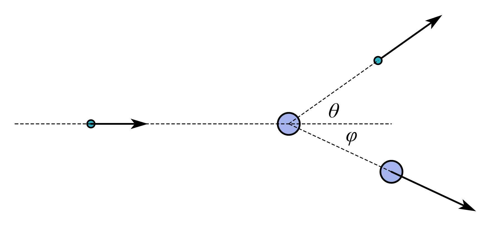

康普顿散射公式的推导
推导

碰撞前后能量守恒,有
\[ \begin{align} h\nu _0+m_0c^2=h\nu +mc^2, \end{align} \]
动量守恒,有
\[ \begin{align} \begin{cases} \frac{h}{\lambda}\sin \theta =mv\sin \varphi\\ \frac{h}{\lambda _0}=\frac{h}{\lambda}\cos \theta +mv\cos \varphi\\ \end{cases}, \end{align} \]
另有关系式
\[m=\frac{m_0}{\sqrt{1-\beta ^2}},\beta =\frac{v}{c},m^2c^2=m_{0}^{2}c^2+m^2v^2.\]
既然康普顿散射公式是描述散射前后光子的波长改变,那么自然要将以上公式中有关电子的运动变量消去, 即往消去
\[m,v,\sin \varphi ,\cos \varphi ,\]
这四个参量的方向上去进行. 对(2)式整理成如下形式:
\[ \begin{align} \begin{cases} \frac{h}{\lambda}\sin \theta =mv\sin \varphi\\ \frac{h}{\lambda _0}-\frac{h}{\lambda}\cos \theta =mv\cos \varphi\\ \end{cases}, \end{align} \]
有恒等式\(\sin ^2\varphi +\cos ^2\varphi \equiv 1\)成立, 故
\[ \begin{align} \begin{cases} \frac{h^2}{\lambda ^2}\sin ^2\theta =m^2v^2\sin ^2\varphi\\ \left( \frac{h}{\lambda _0}-\frac{h}{\lambda}\cos \theta \right) ^2=m^2v^2\cos ^2\varphi\\ \end{cases} \end{align} \]
进而有
\[\frac{h^2}{\lambda ^2}\sin ^2\theta +\left( \frac{h}{\lambda _0}-\frac{h}{\lambda}\cos \theta \right) ^2=m^2v^2,\]
据\(m^2c^2=m_{0}^{2}c^2+m^2v^2\Rightarrow m^2v^2=m^2c^2-m_{0}^{2}c^2\), 则
\[\frac{h^2}{\lambda ^2}\sin ^2\theta +\left( \frac{h}{\lambda _0}-\frac{h}{\lambda}\cos \theta \right) ^2=m^2c^2-m_{0}^{2}c^2,\]
在\(h\nu _0+m_0c^2=h\nu +mc^2\)中可整理出
\[ h\left( \nu _0-\nu \right) +m_0c^2=mc^2 \\ \Rightarrow \left( \frac{h}{\lambda _0}-\frac{h}{\lambda} \right) +m_0c=mc, \]
两边平方,得
\[ \left( \frac{h}{\lambda _0}-\frac{h}{\lambda} \right) ^2+m_{0}^{2}c^2+2m_0c\left( \frac{h}{\lambda _0}-\frac{h}{\lambda} \right) =m^2c^2, \]
也就是
\[\left( \frac{h}{\lambda _0}-\frac{h}{\lambda} \right) ^2+2m_0c\left( \frac{h}{\lambda _0}-\frac{h}{\lambda} \right) =m^2c^2-m_{0}^{2}c^2,\]
从而 \[ \begin{align*} \frac{h^2}{\lambda ^2}\sin ^2\theta +\left( \frac{h}{\lambda _0}-\frac{h}{\lambda}\cos \theta \right) ^2=\left( \frac{h}{\lambda _0}-\frac{h}{\lambda} \right) ^2+2m_0c\left( \frac{h}{\lambda _0}-\frac{h}{\lambda} \right) \\ \frac{h^2}{\lambda ^2}+\frac{h^2}{\lambda _{0}^{2}}-\frac{2h^2\cos \theta}{\lambda \lambda _0}=\frac{h^2}{\lambda ^2}+\frac{h^2}{\lambda _{0}^{2}}-\frac{2h^2}{\lambda \lambda _0}+2m_0c\left( \frac{h}{\lambda _0}-\frac{h}{\lambda} \right) \\ \frac{h}{\lambda \lambda _0}-\frac{h\cos \theta}{\lambda \lambda _0}=m_0c\left( \frac{1}{\lambda _0}-\frac{1}{\lambda} \right) \\ \frac{h\left( 1-\cos \theta \right)}{\lambda \lambda _0}=m_0c\left( \frac{1}{\lambda _0}-\frac{1}{\lambda} \right) \\ \frac{h}{m_0c}\left( 1-\cos \theta \right) =\lambda \lambda _0\left( \frac{1}{\lambda _0}-\frac{1}{\lambda} \right) \\ \frac{h}{m_0c}\left( 1-\cos \theta \right) =\lambda -\lambda _0. \end{align*} \]
由此得到康普顿散射公式
\[\frac{h}{m_0c}\left( 1-\cos \theta \right) =\lambda -\lambda _0,\]
注意到, \(\frac{h}{m_0c}\)具有长度的量纲, 称之为电子的康普顿波长, 记作\(\lambda _{\mathrm{ec}}\). 同时, 由于\(1-\cos \theta \geqslant 0\), 因此碰撞后散射光子的波长$\(是必然大于入射光子波长\)_0$的, 故
\[\lambda _{\mathrm{ec}}\left( 1-\cos \theta \right) =\Delta \lambda ,\]
中\(\Delta \lambda >0\).
下面考虑问题.
散射光子能量与反冲电子动能
散射光子的波长为\(\lambda\), 由\(E=h\nu\), 得
\[E=\frac{hc}{\lambda}=\frac{hc}{\lambda _0+\frac{h}{m_0c}\left( 1-\cos \theta \right)},\]
我们常用频率来表出能量, 于是对康普顿散射公式进行整理:
\[\frac{h}{m_0c}\left( 1-\cos \theta \right) =\lambda -\lambda _0\Leftrightarrow \frac{h}{m_0c}\left( 1-\cos \theta \right) =\frac{c}{\nu}-\frac{c}{\nu _0},\]
于是
\[ \begin{align*} \frac{1}{m_0c^2}\left( 1-\cos \theta \right) +\frac{1}{h\nu _0}=\frac{1}{h\nu} \\ \frac{1}{\frac{1}{m_0c^2}\left( 1-\cos \theta \right) +\frac{1}{h\nu _0}}=h\nu \\ h\nu =\frac{h\nu _0}{\frac{h\nu _0}{m_0c^2}\left( 1-\cos \theta \right) +1} \end{align*}, \]
定义
\[\gamma \equiv \frac{h\nu _0}{m_0c^2},\]
于是
\[h\nu =\frac{h\nu _0}{\gamma \left( 1-\cos \theta \right) +1},\]
什么时候散射光子能量最小? 只需令$ =$, 立即有
\[\left( h\nu \right) _{\min}=\frac{h\nu _0}{2\gamma +1},\]
能量守恒, 反冲电子动能等于光子能量的变化量, 为
\[E_{k,\max}=h\nu _0-\left( h\nu \right) _{\min}=h\nu _0\left( 1-\frac{1}{2\gamma +1} \right) =\frac{2\gamma}{2\gamma +1}h\nu _0.\]